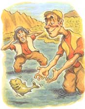

LAST LAUGH
Visiting relatives can make
life a joy... or a living hell.
A while back, I found myself deeply connecting on a cosmic level with songsmith extraordinaire John Denver, a circumstance that came as something of a surprise to me since John and I don't generally share the same musical taste ...at all. It occurred when I picked up my life and moved to a small town nestled in the heart of the Colorado Rockies. Since the day I unpacked, I have been experiencing a daily dose of what Mr. Denver termed simply Rocky Mountain High.
Whether I am driving to work, chopping wood for the stove, or cooking in the kitchen, I look out on the horizon and there they are with their majestic snow-covered peaks and brilliant yellow and orange valleys. They are inescapable. I'd been told how the mountains can change a man, make him more spiritual, bring him closer to God. But the thing that nobody told me about moving to the mountains is that the second I signed the lease, everyone and everything I have ever crossed paths with in my life would inevitably show up at my doorstep looking for an inexpensive (read: free room and board) weeklong getaway. While it is easy to explain to most people that you are "unfortunately bogged down with work" or "going away that weekend" to avoid any extended stays, there exists a certain breed of visitors that cannot and will not be deterred: relatives.
Don't get me wrong, I love my family, particularly when they live in another state or even better a different time zone. They can be a little eccentric at times, to say the least, and a little less appreciative of Mother Nature's wonders than I would like. But still they come. Yes, move to the mountains and they will come.
On a recent visit, my grandparents came down with my little cousin Dennis and my older brother Richie. Things actually got off to a pretty good start. I had a few friends over for dinner that night and we all shared a remarkably pleasant and uneventful dinner together. Afterwards, we sat by the wood-burning stove in the living room and spent some time chatting and catching up. Grandma and Gramps changed into their pajamas and got ready for bed as my friend Ken showed Dennis a scar he had acquired on his arm during a run in with a chain saw. Gramps caught sight of the display and for some reason deep within the crevices of his mind, he came to the conclusion that a contest to see who had the nastiest scar was being waged. Without so much as a word, Gramps walked up to Ken, cleared his throat, and dropped his pants to the floor to show everyone the scar from his hernia operation. His pants were joined shortly by everyone's jaw (including my girlfriend's) as we all learned that Gramps unfortunately does not wear underwear under his pajamas.
But that's minor. The man's 77 years old, after all. The thing that drives me nuts is the utter disrespect and actual active loathing of nature many of my relatives exhibit, epitomized best by my brother.
Early one morning, I got him all suited up in hip boots and dragged him down to a nearby creek to do a little fly-fishing. Standing out in the babbling water has always helped me clear my mind, relax, and reconnect. I figured this could maybe change his view of things. Unfortunately Richie did not have the religious experience I was hoping for. He did call out several times for his creator, although "God" was usually fol lowed by a colorful expletive as he wrestled with the rod and reel. After two hours in the water, I caught a beautiful striped bass. Richie almost lost his mind when after catching the fish, I released it back into the creek. "What the @#$& are you doing you moron! That was dinner!" When I explained that by releasing the fish I would give another fisherman the pleasure of catching it, he just looked at me and marched back to the shore. He kicked off the boots, lit a cigarette, and actually gave me the finger. "Two freakin' hours...," he muttered.
But I was determined to change his view of nature. On the day before they left, I took him out on one of the most awe-inspiring trails the Rockies have to offer. If walking among the turning leaves of the aspens did not touch something in him, he simply had no soul.
He was pretty quiet along the beautiful yet strenuous hike, and I was careful not to say too much either. Finally, after four hours of hard climbing, we reached the overpass, the peak of our hike. We looked out over the green and yellow valleys surrounding us. I looked at Richie and he was completely silent. He had this incredibly thoughtful look on his face. What could he be thinking? Was he reflecting on our shared childhood? His face began contorting. Could it be that this majestic view finally broke through to him and moved him to tears? What soulful thoughts were racing through his mind? Richie's face suddenly twisted violently and he let out an incredibly loud sneeze. "A %$#@! gnat just flew up my nose!" He started back down the mountain. "Why do you live here? Lose a bet or something?"
The next day, I put Grandma, Gramps, Richie, and Dennis on a plane and headed home. Along the way, I pulled over to take in the view. John Denver's "Rocky Mountain High" still rang through my head, but all I could visualize was how soon I could run off to the phone company to get an unlisted number.
- Dan Bova
|
 |
|
|